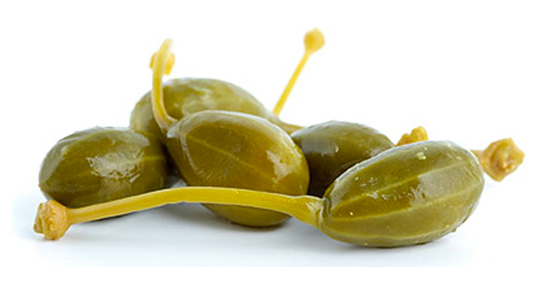

Однажды Одя понял, что выгорел.
написал начальнику, что увольняется и
пошёл в бар...
написал начальнику, что увольняется и пошёл в бар...
каперсный вопрос
terra incognita
Топ 5 стрёмных вопросов на собесах
| 5. | Почему вы выбрали нашу компанию? |
| 4. | Ваши слабые стороны? |
| 3. | Ваши зарплатные ожидания? |
| 2. | Что выведет этот код? |
| 1. | Кем вы видите себя через 5 лет? |
Нервная система, которая регулирует уровень внимания, служит для его ослабления у высокоразвитых животных, так как центральная и периферическая нервные системы обеспечивают больше информации, чем участок мозга, отвечающий за познавательные способности, может обработать. Без системы подавления осознанности мозг может воспринимать гораздо больше информации в так называемом состоянии расширенного сознания
думать больно
думать больно
но можно прибухнуть
думать больно
но можно прибухнуть
Одя осознал что он и где он и пошёл в топы
I. Сотворение мира
Бирюзовое человечество

Иерархия
по историческим причинам...
II. А тем временем у
Σλάβων
III. ТЕЗАУРУС
Кто такие топ менеджеры?
ЧТО?
КАК?
Топ-менеджер
- сверху больше чем снизу
- специализация
- заинтересован в результате
- имеет широкие полномочия
III. Мёд и вино
Quod licet Jovi, non licet bovi
VI. Долгий путь
Га́битус — одно из основных понятий в теории Пьера Бурдьё, который трактуется как «система приобретённых схем, действующих на практике как категории восприятия и оценивания или как принцип распределения по классам, в то же время как организационный принцип действия»[1].
...
Феноменоло́гия (нем. Phänomenologie «учение о феноменах») — идеалистическое направление в философии XX века, определявшее свою задачу как беспредпосылочное описание опыта познающего сознания и выделение в нём сущностных черт.
...